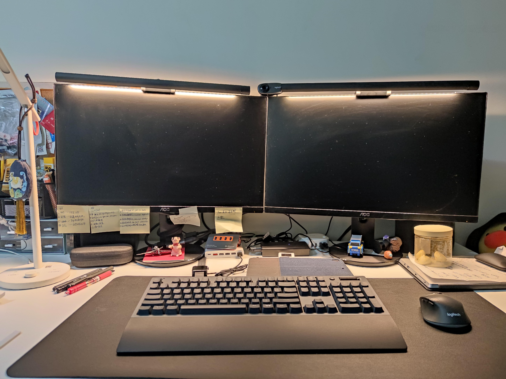
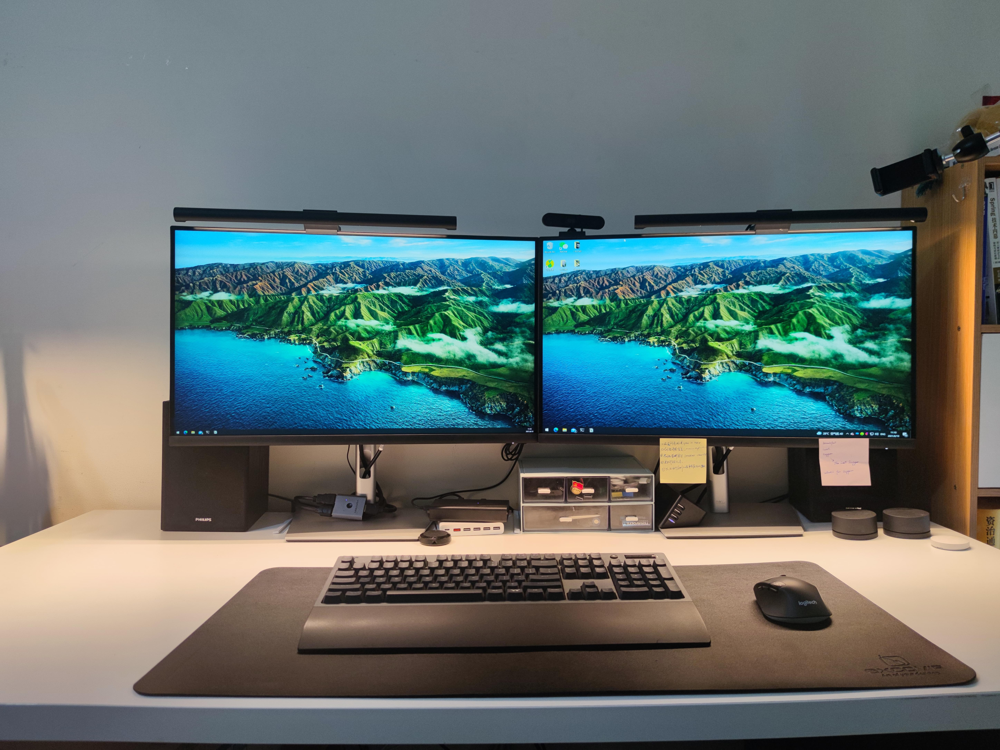
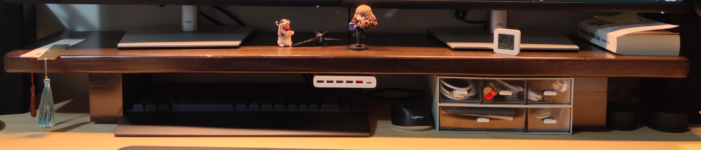
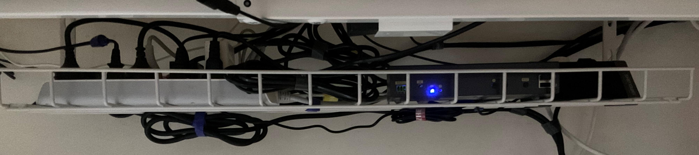
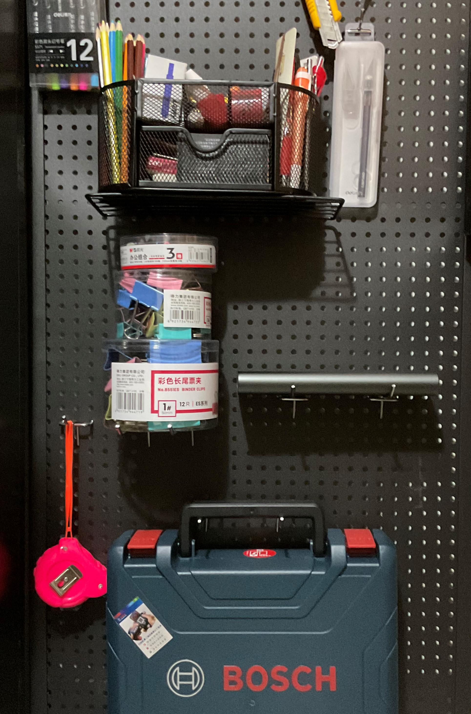

2021年6月2日，解除隔离，被放出来。时隔半年，我又回到了我的小窝。
在当时，可以预见的是，下一份工作可以长期在家办公（WFH），因此桌面还是需要改造一下，让自己在未来的生活和工作满意，取悦自己。
之前的桌面
先看一下之前的桌面，
主要部件如下：
- 23.8寸显示器（AOC Q2490PXQ）x2
- 屏幕挂灯(倍思) x2
- 摄像头（罗技 C310）x1
- 台灯（小米 米家LED智能台灯1S）x1
- HUB (ORICO 全铝高速USB3.1Gen2) x1
- HDMI 切换器（威迅 HDMI切换器二进一出 4K) x1
- KVM切换器（绿联 KVM切换器 HDMI切屏器2进1出4K高清）x1
- USB充电器 (小米 原装60W USB充电器快充版 六口输出 QC3.0快充协议) x1
- 温湿度传感器（小米 米家蓝牙温湿度计2）x1
- 插排（公牛（BULL） 防过充插座带多口全USB插排）x1
- 微软（Microsoft）Designer 无线蓝牙鼠标 x1
- 键盘（TT G821 青轴）x1
- 罗技（Logitech） M720 鼠标 x1
- 鼠标垫（宜适酷 典雅黑 BAS1801-01）x1
- 桌子（宜家 利蒙 150x75桌面 + 可调节桌腿）x 1
- 电脑椅（联丰 ds-177黑）x1
主要问题：
- 显示器屏幕分辨率为2k。虽然2k，但是内心却是向往4k。2k的屏敲代码一点儿都不开心。
- 摄像头不支持Windows Hello
- 桌面太乱了
第一部分改造
显示器
选择显示器最重要的是解决第一个问题，让我可以开心地码字。
第一步，确定确定尺寸。我桌面宽度是75cm，之前的是显示器是23.8寸，感觉还是比较舒适的，因此尺寸范围是23.8-27。
第二步，确定分辨率。之前的显示器是2560*1440dpi，文字显示的细腻度虽然比1080p好很多，但是依然有点糊以及有锯齿。我使用显示器的主要场景是写代码，所以文字显示细腻度对我来说是很重要的，因此选择分辨率为4K。
第三步，确定其他功能。我长期面对屏幕，因此护眼对我比较重要。
第四步，显示器品牌。我个人更加倾向于DELL，LG这一类的大厂，也包括之前使用过的AOC。
最终的选择是DELL P2721Q。
最开始的时候购入的并不是DELL P2721Q，而是AOC U27U2D。从参数上来说AOC U27U2D完全满足我的需求，但是使用了一天之后，有一丢丢眩晕，然后7天无理由退货，重新购入DELL P2721Q。选择显示器的时候，重要的还是自己的眼睛舒服。
屏幕挂灯
之前的屏幕挂灯使用的是倍思的，其开关和调节按钮均在挂灯，每次开关都需要站起来，很不方便。
更换成小米的显示器挂灯。这款挂灯最大的优势就是够用而且便宜。
摄像头
之前使用的罗技C310摄像头是2017年购入，但是主要使用还是在2020年。主要的使用场景就是Zoom视频会议，除此之外没啥太大功能。
更换摄像头最主要的理由还是想使用Windows Hello。我使用1Password管理自己几乎所有的密码，使用了Windows Hello之后，我就不用每次输入PIN码或者密码了。
Windows Hello摄像头可选项特别少，当然淘宝上也还是有不少自行改装的。下面是几款我知道的支持Windows hello 的摄像头
- Intel RealSense SR300 F200 （3D结构光）
- 联想500 （红外）
- 罗技（Logitech）C1000e （红外）
我购入的是联想500（购入时价格399）。理由就是相较于罗技C1000e（京东报价1499）便宜，而且当时没发现Intel RealSense F200（淘宝200多）。
小结
2021年6月，第一部分改造到这里就结束，主要是对一部分硬件进行了升级和更换。
第二部分改造
2021年6月21日，加入我现在的公司，开始了长期的在家办公。
第二部分改造起因如下：
- 2021年10月的时候发现，宜家利蒙桌子的桌面弯曲了
- 电脑椅也歪了
改造目标：
- 电动升降桌
- 电竞椅/人体工学椅
- 无线桌面。桌面整洁，尽可能的没有线之类的。
电动升降桌
为什么选择电动升降桌？
久坐的危害是非常大的，比如人脑供血不足，全身肌肉酸痛，脖子僵硬，痔疮，肥胖等等。坐站交替可以有效的缓解这些问题，电动升降桌就提供了站着办公的可能性。
如何选购可参考如下链接：
2021年电动升降桌选购攻略及高性价比电动升降桌推荐（20210628更） - 知乎 (zhihu.com)
电动升降桌推荐|电动升降桌选购指南 - 知乎 (zhihu.com)
我最终购入的是Brateck北弧 K33。桌面大小，我个人还是倾向于选择150*75的。使用了快一个月了，够用但是并不优秀，比如：
- 站立办公打字的时候，会有轻微的晃动，在我的可接受范围内。
- 加上桌面最低高度76cm，有点略高，使用时需要将椅子调整到最高位置。
综合其价格和配置，总体上还是满意的。
电脑椅
我购入的电脑椅是黑白调的电竞椅，入手这款椅子的原因：
- 皮质，不容易积灰。
- 配色，红黑配。我挺喜欢红黑配色。
我比较喜欢在疲惫的时候小憩一会儿或者单纯闭着眼睛躺着思考，这款电脑椅支持后躺，但是并不完美。当坐着的时候靠背有一定的支持作用，比较合适。但是躺下的时候，颈部是悬空的，很难受，加一个颈枕可以缓解这个痛点。
电脑椅和电动升降桌，每一个拎出来看，都还行。但是1+1 < 2啊，两个之间的高度不契合，因此我加了一个网易严选的乳胶坐垫。
显示器增高架
选择入手显示增高架的原因如下：
- 站立办公和坐着办公的时候，显示器的高度是需要调节，让自己感到舒适。DELL显示器支持的调节范围并不在我的舒适范围内。
- 增加桌面可利用空间。
最终是在淘宝上购入的一款120cm的实木增高架。
在增高架上可以摆放一些小物价，比如书签、蓝牙温湿度传感器、便利贴等等。增高架最右边放着两个控制屏幕挂灯的旋转按钮。旁边是两个叠在一起的收纳盒，用于收纳数据线。将小米USB充电器使用3M魔术贴粘在了增高架上，可以进一步利用空间。这样剩下的空间就可以收纳键盘和鼠标。比如在看书或者吃饭的时候就可以把，键鼠收纳起来，桌面空间就足够大了。
桌底收纳槽
收纳桌下的各种线，是桌底下变得整洁。之前总是不小心踢掉某根线啥的。
在长81cm的收纳槽可以放下很多东西，一个10孔插排，一个KVM切换器，一个4空插排。可以使用束线带将多余的线收纳起来，这样线就不会特别乱。
洞洞板
洞洞板可以灵活地收纳一些物品，比如将剪刀、手工刀、卷尺等挂在上面使用起来更加方便。
我选择的这一款带有一个托盘，托盘下面的空间放下扫地机器人，托盘上放打印机，这样可以更加有效率地利用空间。
KVM切换器
简单介绍一下我的使用场景，我有两台电脑，一台是公司的macbook pro，一台是自己组装的台式机。每天我都需要在这两个设备之间切换使用，工作的时候使用公司的电脑，非工作时间就使用自己的电脑。
之前的解决方案是使用了两个切换器，一个HDMI切换器用于切换其中一个屏幕，另外一个便宜的KVM的切换器用于切换屏幕和键鼠等外接设备。主要问题是，每次切换需要手动按两次按钮。
购入新的KVM切换器之后，可以使用鼠标在两个设备之间快速切换。而且因为不需要手动在切换器上操作，可以将其收纳到桌下理线槽上，进一步节省桌面空间。
到这里，第二部分改造就完成了。
总结

主要部件：
- 屏幕挂灯(小米显示器挂灯) x2 京东
- 摄像头（联想500）x1
- 显示器（戴尔(DELL) P2721Q）x2 京东
- 120cm显示器增高架 x1 淘宝
- 温湿度传感器（小米 米家蓝牙温湿度计2）x1 京东
- 收纳盒（JEKO 透明桌面收纳盒） x2 京东
- USB充电器 (小米 原装60W USB充电器快充版 六口输出 QC3.0快充协议) x1
- 台灯（小米 米家LED智能台灯1S）x1 京东
- 键盘（TT G821 青轴）x1 京东
- 鼠标（罗技（Logitech） M720 鼠标） x1 京东
- 鼠标垫（宜适酷 典雅黑 BAS1801-01）x1 京东
- 桌子（Brateck升降桌K33) x1 京东
- 电脑椅（黑白调HDJY002BMJ）x1 京东
- 桌底收纳槽 x1 淘宝
- KVM切换器（eKL 412HK）x1 京东
- 洞洞板 x1 淘宝
通过这次改造之后，我能够更好地利用桌面空间，在不同的任务之间更好地切换。比如在看书的时候，可以把键鼠收纳到增高架下。利用增高架可以有效地将线缆隐藏起来，使用收纳槽可以更好地收纳线缆。
我也曾尝试使用磁吸模块将线缆固定在桌子侧边，这样桌面虽然看起来很整洁但是桌下依旧乱，因此暂时放弃了这种方案。即时收纳，物归原处才能够保持桌面的整洁。
到此刻位置，其实还有很多事情没有做，比如：
- 无线充电
- 氛围灯
- 桌面时钟
- 提醒工具
这些会在桌面改造2.0中慢慢来做，在未来的部分我更加倾向于自己DIY。